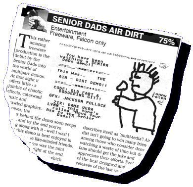

| OUR old friend Chris Holland, the editor of Maggie gaves us this great review in the June 1997 issue of Atari Computing for our Airdirt! Thanks for the write-up, mate! | |
|
 |
SENIOR DADS
AIR DIRT
Rating: 75% Classification: Entertainment, Freeware, Falcon only THIS rather amazing freeware production is the debut by the Senior Dads into the world of multipart demos. At first sight it offers little - a jumble of chaotic effects, caterwaul music and scrawled graphics. however, the humour behind the demo soon seeps through, and by the end you're laughing along with it - well I was! I suspect this demo is best enjoyed in company of some like-minded friends. The highlight for me was the mini punk rock revival right at the end, with animations and music which puts to shame anything else that describes itself as 'multi-tedia'! Air dirt isn't going to win many friends among those who consider demo watching a waste of time but demo fans should get the joke and appreciate their efforts. Probably one of the best designed and produced releases of the last year! Chris Holland |